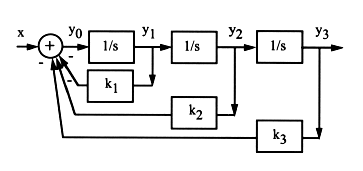
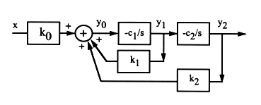

Higher than first order systems can be built with multiple integrators,
as shown here for a third order system:

From the diagram, we can get
(102)
But we also have
(103)
i.e.,
(104)
we get the transfer function
(105)
Second order system by 2 integrators

From the diagram, we can get
(106)
substituting the first two equations into the last one, we get
(107)
from which we obtain the transfer function as
(108)
which is a second order system. In particular, if , we have
(109)
Comparing this with the canonical 2nd order system transfer function
(110)
we see that we can let and . Moreover, ,
i.e., the feedback from the output should be negative. is a constant
scalar which can take any value.